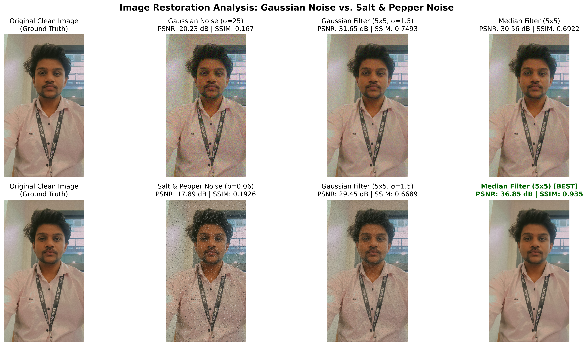
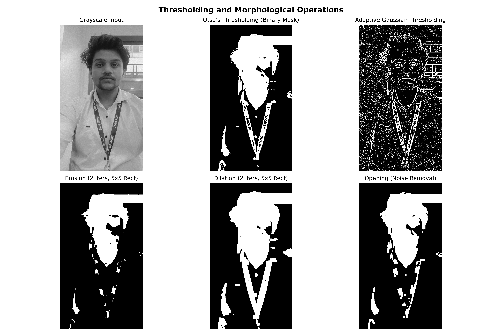
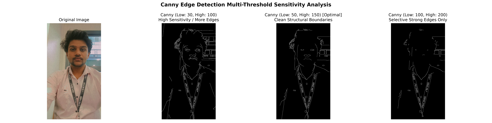
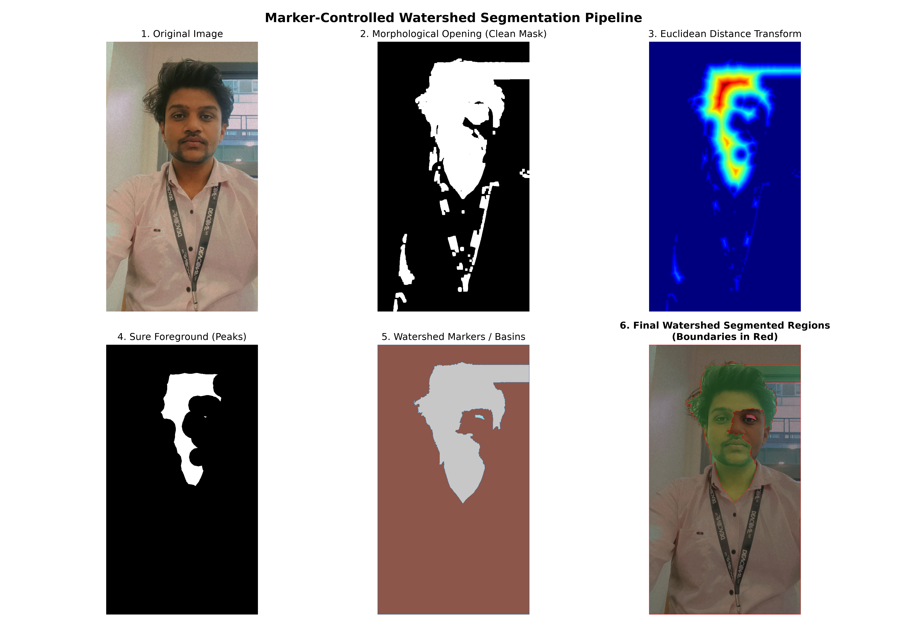
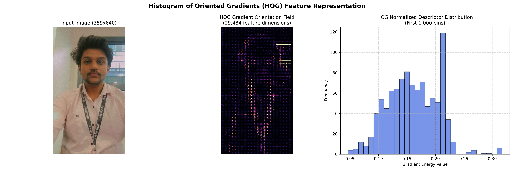
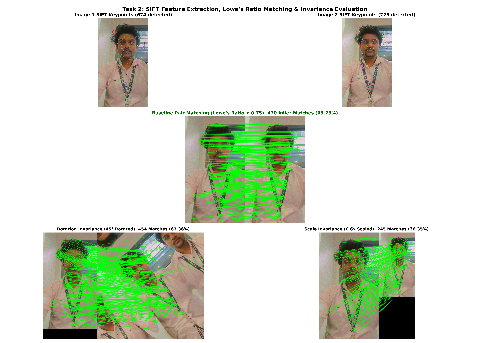
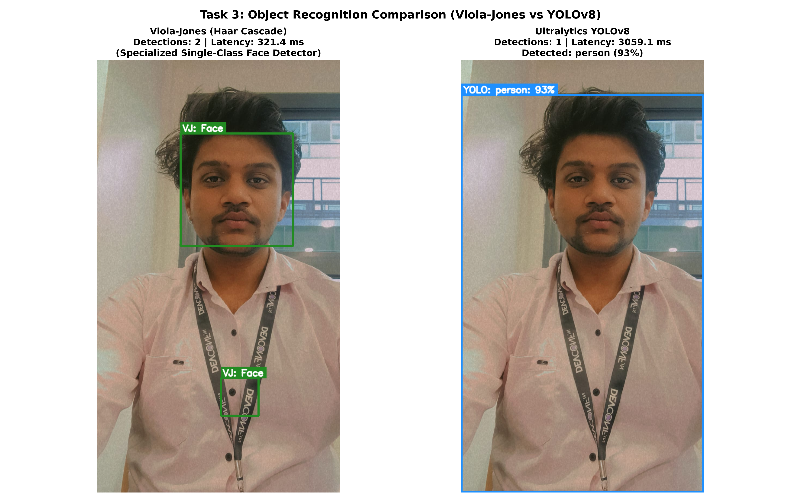
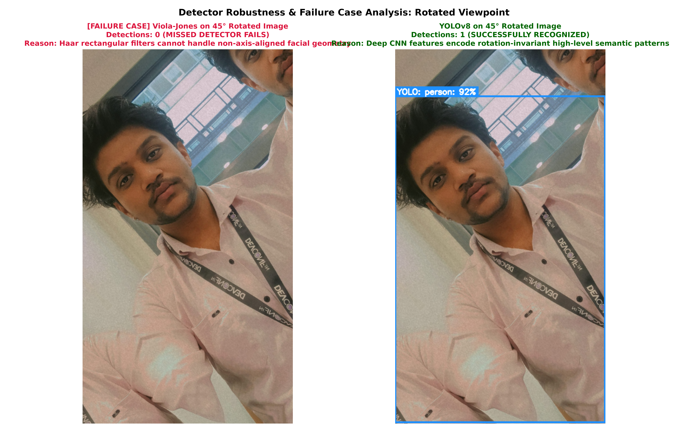
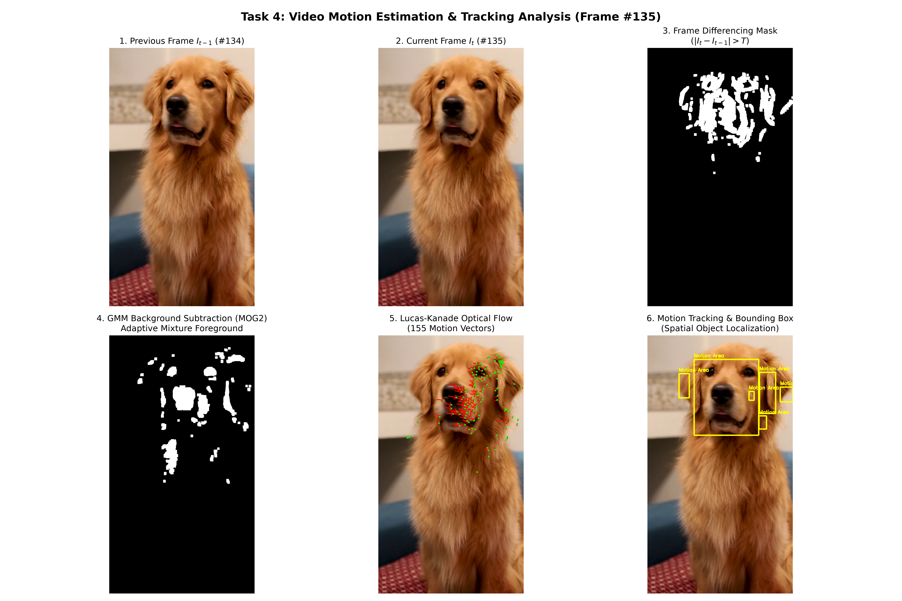

Practical Coding Assignment — Units 3, 4, and 5
Student: Devendra Agrawal GitHub: DARSH-07 Repository: CV-Practical-CCA3
Evaluator Access Granted: rahul.inchal.inchal24@gmail.com | rahul.inchal.vf@mitwpu.edu.in
Project Explanation Video URL: [Paste Google Drive Video Link Here]
This report documents the implementation and performance evaluation of algorithms from image restoration, segmentation, feature matching, object recognition, and video motion estimation.
Image_org.jpeg): Self-captured high-resolution portrait (899 x 1599).Image_2.jpeg): Transformed view for SIFT invariant feature matching.video_1.mp4): Self-recorded video of a Golden Retriever dog (1080 x 1920 portrait, 284 frames, 30 FPS) with dynamic head motion and stable indoor background.| Condition | PSNR (dB) | SSIM |
|---|---|---|
| Gaussian Noisy | 20.23 dB | 0.167 |
| Gaussian restored GaussianFilter | 31.65 dB | 0.7493 |
| Gaussian restored MedianFilter | 30.56 dB | 0.6922 |
| SaltPepper Noisy | 17.89 dB | 0.1926 |
| SaltPepper restored GaussianFilter | 29.45 dB | 0.6689 |
| SaltPepper restored MedianFilter | 36.85 dB | 0.935 |





| Experiment Condition | Image 1 KPs | Image 2 KPs | Raw Matches | Good Matches | Retention Ratio |
|---|---|---|---|---|---|
| Original Pair (Image 1 vs Image 2) | 674 | 725 | 674 | 470 | 69.73% |
| Rotated Image 2 (45 degrees) | 674 | 1822 | 674 | 441 | 65.43% |
| Rescaled Image 2 (0.6x downscaled) | 674 | 398 | 674 | 245 | 36.35% |

Viola-Jones detected 2 faces in 321.4 ms. YOLOv8 detected 1 person in 3059.1 ms.



| Technique | Principle | Complexity | Camera Sensitivity | Stationary Object | Ghosting | Output |
|---|---|---|---|---|---|---|
| Frame Differencing (|I_t - I_{t-1}|) | Pixel-by-pixel intensity subtraction between consecutive frames with thresholding | Very Low (O(N) single subtraction per pixel, >100 FPS) | Extremely High (Any camera tremor lights up entire mask as motion) | Fails (Moving object becomes invisible the moment it stops moving) | Double-ghost effect: marks both where object left and where it entered | Binary spatial mask of pixel changes |
| GMM Background Subtraction (MOG2) | Models pixel color distributions over time as a mixture of Gaussians | Moderate (~40-60 FPS, updates adaptive Gaussian parameters) | Moderate (Handles subtle background motion like leaves, tremors) | Good (Preserves stopped foreground for several frames before slow assimilation) | Minimal (Initial ghost clears quickly as background model converges) | Clean binary foreground segmentation mask with shadow suppression |
| Lucas-Kanade Optical Flow | Solves optical flow equation under brightness constancy & spatial coherence | Moderate-High (Calculates spatial image gradients & 2x2 matrix inversions) | Shows global vector field (Global shift vs local object vectors) | Vectors drop to zero magnitude (Preserves tracked feature locations) | None (No background model or ghost silhouettes generated) | Continuous 2D velocity vectors (dx, dy) with direction and magnitude |
The experimental results confirm that: